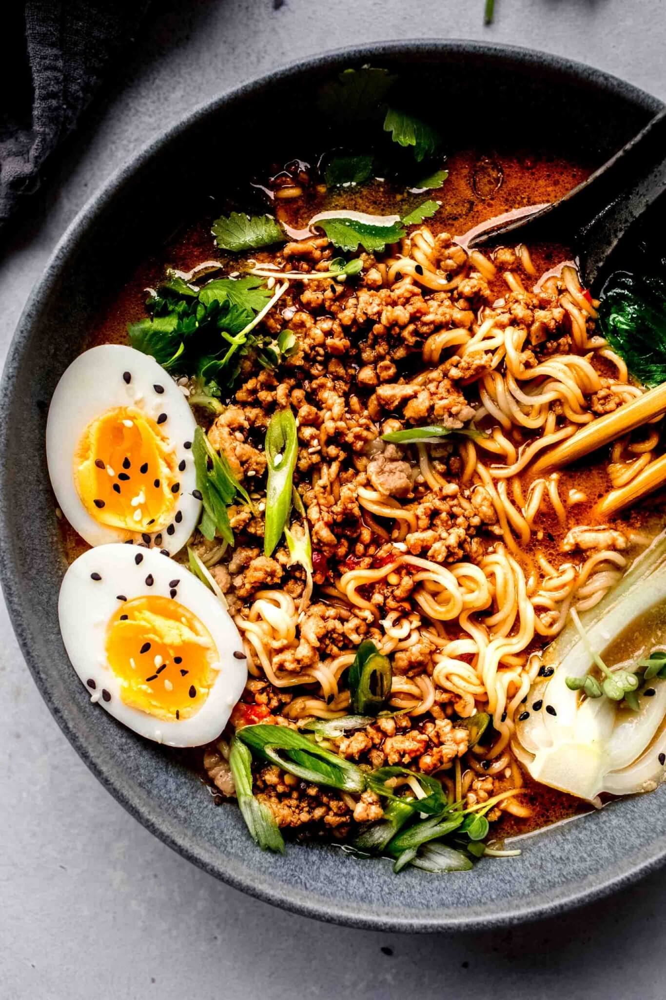

Gourmet Ramen

Description
A better kind of ramen than you are normally used to! This recipe uses your normal 99 cent ramen packets
along with a few other ingredients to present you with an even tastier asian dish. This recipe is great for a nice lunch,
or even a movie night when you are trying to impress a significant other.
Ingredients
- 99 cent ramen
- broccoli, celery, or vegetable of your choice
- one egg
- pork loin
Steps
- Start by searing or boiling your vegetables of choice.
- Next, throw pork loin on grill or skillet and cook until you reach your desired temperature.
- After that, start boiling your egg. this egg will be hardboiled.
- Boil your ramen last, when you start boiling ramen, it should be time to take everything else off the stove/and or grill.
- Combine all ingredients together, and pour chicken broth on top. There you go! Cheap homemade gourmet ramen!